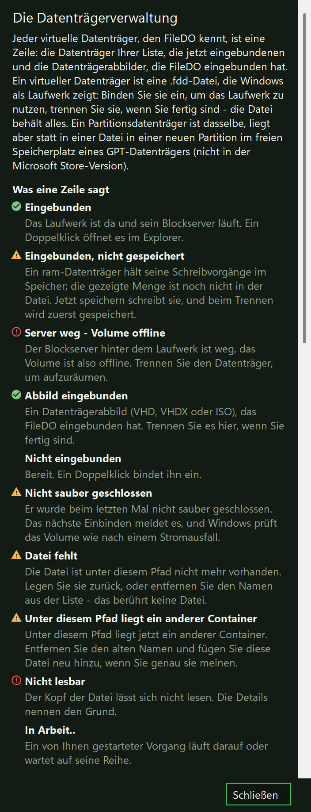
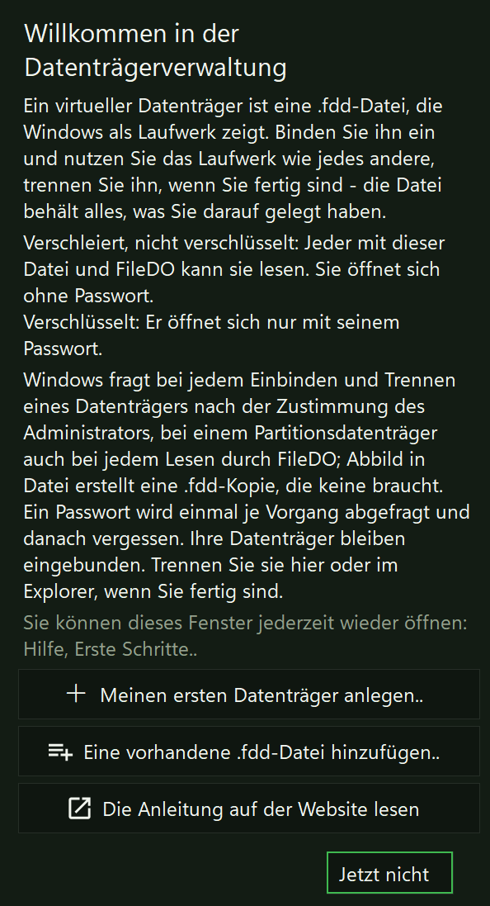

Anlegen
Ein neuer Container mit 20 GB. Eine vorhandene Datei wird nie überschrieben. Das erste Einbinden formatiert das Volume mit NTFS.
filedo vd new work.fdd 20G
Anleitung · virtuelle Datenträger
Ein .fdd-Container ist eine gewöhnliche Datei, die ein ganzes Volume enthält. Eingebunden ist er ein Laufwerksbuchstabe wie jeder andere; nicht eingebunden ist er eine Datei, die Sie kopieren, sichern und allein mit FileDO lesen können, ohne ihn einzubinden. Das Format ist vollständig als Vertrag FDD-FORMAT veröffentlicht, und was ein Programm tun muss, das ihn liest oder schreibt, als FDD-BEHAVIOUR - die Daten hängen also nicht davon ab, dass es FileDO weiter gibt.
Ein neuer Container mit 20 GB. Eine vorhandene Datei wird nie überschrieben. Das erste Einbinden formatiert das Volume mit NTFS.
Beim ersten freien Buchstaben; ro für schreibgeschützt, as X: für einen Buchstaben Ihrer Wahl. Windows fragt nach der Zustimmung eines Administrators.
Alles Ausstehende wird gesichert, und der Container wird als sauber geschlossen markiert, bevor der Buchstabe verschwindet.
plain wächst mit dem Inhalt. fast belegt sofort die ganze Größe, sodass ein Schreibvorgang nie auf das Wachsen der Datei wartet. ram hält das Volume im Speicher, solange es eingebunden ist, und sichert es alle paar Sekunden in die Datei: Ein Absturz oder Stromausfall verliert, was nach der letzten Sicherung geschrieben wurde. vault ist immer verschlüsselt und braucht daher immer ein Passwort. Jedes Profil mit Passwort (p: oder die Abfrage) ist verschlüsselt; ohne Passwort ist es verschleiert, nicht verschlüsselt.
Diese drei brauchen keine Administratorrechte, kein iSCSI und kein Netzwerk, und sie schreiben nichts in den Container. Sie funktionieren in jedem Build, auch in dem aus dem Microsoft Store.
Profil, Größe, ob er verschleiert oder verschlüsselt ist, ob er sauber geschlossen wurde und wann er zuletzt vollständig gesichert wurde. Kein Passwort nötig.
Header, die Karte und jeden belegten Cluster; Schäden sind Exit-Code 4. Format 1.0 speichert keine Prüfsummen der Daten, daher werden die Daten gelesen, nicht verifiziert.
raw ergibt ein einfaches Datenträgerabbild, vhd eine feste VHD, die Windows von selbst einbindet, ganz ohne FileDO. Das Abbild eines verschlüsselten Containers ist nicht verschlüsselt. In diesem Build lassen sich einzelne Dateien nur durch Einbinden herausholen.
Ohne Passwort ist ein Container verschleiert, nicht verschlüsselt. Die Verschleierung verbirgt das Volume vor einem flüchtigen Blick und vor Werkzeugen, die nach Datenträgerabbildern suchen - und vor niemandem, der die Datei und FileDO hat. FileDO nennt sie nie Verschlüsselung.
Mit Passwort ist ein Container verschlüsselt: Ohne das Passwort ist die Datei nicht lesbar. Es gibt keine Wiederherstellung - ein vergessenes Passwort ist ein verlorener Container. pass ändert das Passwort, ohne die Daten neu zu schreiben; früher erstellte Kopien der Datei öffnen sich daher weiter mit dem alten.
Ein Passwort wird nie an Ort und Stelle entfernt: Ein leeres neues Passwort wird abgelehnt. Stattdessen schreibt clone mit nopass eine neue, verschleierte Kopie - jeder, der diese Datei und FileDO hat, liest sie - und das verschlüsselte Original bleibt, wie es war.
Verschlüsselung schützt die Datei, nicht ein eingebundenes Volume: Solange es eingebunden ist, kann jedes Programm, das Sie starten, es lesen wie jedes andere Laufwerk. ram mit Passwort: Windows kann diesen Speicher auslagern, sodass unverschlüsselte Daten in die Auslagerungsdatei gelangen können. Ein neues Volume wird mit ausgeschalteter Indizierung angelegt; mount noscan nimmt die Containerdatei für die Dauer der Einbindung vom Scan durch Microsoft Defender aus - Dateien auf dem Volume selbst werden weiterhin gescannt.
filedo.exe spricht. Der Server lauscht nur auf 127.0.0.1: Nichts verlässt diesen Computer, und der Container gelangt nie in ein Netzwerk - es sei denn, Sie geben ihn selbst frei (siehe unten).
mount, unmount, save, format, chkdsk und vd auto bitten Windows um die Zustimmung eines Administrators - für den Schritt mit dem Initiator und für nichts sonst: Das Passwort gelangt nie dorthin, und der Blockserver selbst läuft nie mit erhöhten Rechten. Ein Batch zeigt diese Abfrage nie - starten Sie ihn aus einer erhöhten Konsole. Lässt sich der Dienst Microsoft iSCSI-Initiator nicht nutzen oder wird die Zustimmung nicht erteilt, endet der Lauf mit Exit-Code 7, und nichts wird eingebunden.
mount, unmount, save, format, chkdsk, vd auto, vd guard und vd register mit Exit-Code 6 (nicht unterstützt). info, verify, export, compact, grow, seal, clone, pass, destroy, vd new, vd list, vd status, vd add und vd forget funktionieren auch dort. Zum Einbinden nehmen Sie das Setup oder die portable Version von GitHub.
filedo X: unmount.
Nur im getrennten Zustand: Ein eingebundener Container wird mit Exit-Code 8 abgelehnt, und kein Schalter überspringt diese Prüfung. grow 40G vergrößert den Datenträger - das Volume darin wird beim nächsten Einbinden erweitert (Datenträgerverwaltung, Volume erweitern). compact gibt den ungenutzten Platz der Datei an das Laufwerk zurück. seal schreibt eine Kopie, die für immer schreibgeschützt ist, clone eine beschreibbare Kopie mit eigener Identität. format löscht das Volume (fs ntfs oder fs exfat), destroy entfernt die Containerdatei, und mit wipe überschreibt es sie vorher. Beide fragen zuerst; force überspringt die Frage, nie die Prüfung, und ein Batch ohne force führt sie nicht aus. chkdsk prüft das Volume in einem nicht eingebundenen Container und schreibt nichts; chkdsk fix führt dafür chkdsk /f aus - die Reparatur für einen Container, der nicht sauber geschlossen wurde - und fragt zuerst.
Exit-Codes eines einzelnen Container-Befehls: 0 erledigt, 2 wie angegeben abgelehnt, 3 falsches Passwort, 4 beschädigt, 5 ein Lese- oder Schreibvorgang ist fehlgeschlagen, 6 nicht unterstützt, 7 Transport nicht verfügbar, 8 belegt. Ein Batch behält seine 0/1/2.
Ein virtueller Datenträger kann statt in einer Datei auch in einer Partition liegen. FileDO legt im nicht zugeordneten Speicherplatz eines Datenträgers eine neue GPT-Partition an und füllt sie ganz mit einem Container; außerhalb dieses freien Bereichs wird nichts verändert - FileDO wandelt eine vorhandene Partition nie um, ändert nie ihre Größe und schreibt nie in sie. Nur GPT-Datenträger: MBR-Datenträger, dynamische Datenträger, Speicherplätze (Storage Spaces), iSCSI-, Wechsel- und USB-Datenträger werden abgelehnt, und vd disks nennt für jeden den Grund. Sie gewinnen einen Datenträger, den kein Host-Dateisystem trägt, dem Windows keinen Laufwerksbuchstaben gibt und den es nicht zum Formatieren anbietet, mit fest reserviertem Platz; was Sie nicht gewinnen, ist Geschwindigkeit.
Jeder Datenträger, seine Partitionen und seine freien Bereiche; jeder Bereich nutzbar oder nicht, mit Begründung, und ein nutzbarer mit seiner fertigen create-Zeile. Keine Administratorrechte.
<disk> ist disk:{GUID} oder die Nummer aus vd disks; size ist max oder eine Größe wie 40G (abgerundet auf 1 MiB, mindestens 64 MiB). Die Bestätigung zeigt den Datenträger, den Bereich und seine Nachbarn. Das Standardprofil ist fast. Eine Administratorzustimmung; das erste Einbinden formatiert das Volume mit NTFS.
Kopiert die Partition in eine neue, gewöhnliche .fdd-Datei, die ohne Administratorrechte lesbar ist und sich wie jede andere einbinden, klonen und versiegeln lässt. Ein eingebundener Datenträger wird abgelehnt; die Partition bleibt unverändert.
Ein eingebundener Datenträger wird abgelehnt. Tippen Sie zur Bestätigung den Namen des Datenträgers ein; wipe überschreibt die Partition vorher. Gelöscht wird nur eine Partition, die als die von FileDO nachgewiesen ist, und der Platz wird wieder nicht zugeordnet.
Ein Partitionsdatenträger wird über seinen Namen oder seinen Locator fdpart:{GUID} angesprochen, nie über einen Pfad: filedo vd mount data. mount, unmount, save, info, verify, export, pass, seal, clone, vd auto und die Abschaltwache arbeiten wie bei einer Datei; compact und grow nicht (seine Größe ist fest), und die Freigabe über Fast Media Sorter wird vorerst abgelehnt. vd adopt fdpart:{GUID} as data registriert eine FileDO-Partition, die dieser PC nicht kennt (ein Datenträger von einem anderen PC); vd forget entfernt den Namen und lässt die Partition auf ihrem Datenträger. Ein abgelehnter Datenträger endet mit Exit-Code 6, eine verweigerte Zustimmung mit Exit-Code 7 und ein seit der Auflistung geändertes Layout mit Exit-Code 5 - und nichts wurde verändert.
info, verify, export, pass, seal, clone und vd image Windows um Zustimmung. vd image hebt das auf: Die Datei, die es schreibt, ist eine gewöhnliche .fdd, die jeder Lesepfad ohne Administratorrechte öffnet.
.fdd-Datei auf NTFS. Wählen Sie ihn für den festen, getrennten Platz, nicht für Geschwindigkeit.
fast überschreibt den freien Platz, plain und vault nicht. Was der freie Platz vorher enthielt, bleibt in den ungenutzten Clustern eines plain- oder vault-Partitionsdatenträgers, bis das Volume es überschreibt; fast überschreibt beim Anlegen die ganze Partition.
diskmgmt.msc) zeigt die Partition weiterhin an und kann sie löschen. Dort zu löschen löscht den Datenträger darin, ohne nach seinem Inhalt zu fragen. Der sichere Weg ist FileDOs eigenes vd destroy: Es lehnt einen eingebundenen Datenträger ab, verlangt den eingetippten Namen des Datenträgers und löscht nur eine Partition, die es als die von FileDO nachgewiesen hat.
vd disks das, und jeder Partitionsbefehl endet mit Exit-Code 6; nutzen Sie das Setup oder die portable Version von GitHub.
Das Setup bietet den Typ .fdd als eigenes Feature an, „Disk container files (.fdd)“, das Sie abwählen können (DiskContainerIntegration in ADDLOCAL). Ohne das Setup schreibt filedo vd register dasselbe - für diesen Benutzer, oder mit -all-users für den ganzen Rechner -, und filedo vd unregister nimmt es zurück. Alle drei Einträge öffnen das FileDO-Fenster. Ein Doppelklick bindet ein: einen sauber geschlossenen verschleierten Container sofort; ein verschlüsselter fragt im Fenster nach seinem Passwort, nie auf einer Befehlszeile; einer, der nicht sauber geschlossen wurde, sagt das zuerst, mit der Zeit seiner letzten vollständigen Sicherung, und wartet auf Sie; ein bereits eingebundener öffnet sein Laufwerk. Das Kontextmenü ergänzt „Mount read-only“ und „Unmount“; unter Windows 11 stehen sie unter „Weitere Optionen anzeigen“. Im Fenster hat die Gruppe Datenträger eine Seite je Operation, und die Datenträgerverwaltung listet jeden Datenträger an einem Ort. Die Microsoft-Store-Version hat keine Menüeinträge, aber ein Doppelklick auf eine .fdd öffnet das FileDO-Fenster mit diesem Container, und das Fenster sagt klar, dass dieser Build nicht einbinden kann.
Das FileDO-Fenster hat ein zweites Fenster für virtuelle Datenträger: die Datenträgerverwaltung. Sie ist die grafische Oberfläche von filedo.exe, kein neues Programm - filedo_win.exe öffnet nur ein weiteres Fenster. Sie führt jeden virtuellen Datenträger an einem Ort zusammen, eine Zeile je Datenträger: die Datenträger Ihrer Liste, die jetzt eingebundenen und die Datenträgerabbilder (VHD, VHDX, ISO), die FileDO eingebunden hat. Sie hält sich ohne manuelles Aktualisieren aktuell - eine anderswo ausgeführte Einbindung erscheint binnen Sekunden.

Der Zustand steht in Worten neben einem Symbol: „Eingebunden“; „Eingebunden, schreibgeschützt“; „Eingebunden, 180 MiB nicht gespeichert“ (ein ram-Datenträger - die Menge, die noch nicht in der Datei ist); „Server weg - Volume offline“; „Abbild eingebunden“; „Datei fehlt“; „Unter diesem Pfad liegt ein anderer Container“; „Nicht lesbar“; „Nicht sauber geschlossen“; „Nicht eingebunden“. Für einen nicht sauber geschlossenen Datenträger bietet das Zeilenmenü „Volume prüfen“ (nur Lesen) und „Volume reparieren“ - das sind chkdsk und chkdsk /f; die Reparatur fragt vorher, und die Abschlusszeile sagt, was chkdsk gefunden hat. Ein in Fast Media Sorter freigegebener Datenträger zeigt das im selben Wort: „In FMS geöffnet“ (FMS hat ihn für andere geöffnet, und FileDO bindet ihn nicht ein) oder einen Zusatz wie „in FMS freigegeben, geschlossen“.
Jede Schaltfläche der Werkzeugleiste trägt ein Symbol: Neuer Datenträger.., Hinzufügen.., Einbinden, Trennen, Öffnen (im Explorer), Speichern (schreibt einen ram-Datenträger jetzt in seine Datei zurück), Weitere Aktionen, Aktualisieren, Hilfe und Hauptfenster. Darunter liegt eine Filterzeile: eine Beschriftung, ein Feld und ein Kreuz, das es leert. Unter der Liste beschreibt ein Detailbereich den gewählten Datenträger in Sätzen, mit den Schaltflächen, die für ihn gelten; er schließt mit einem Kreuz an seinem rechten Rand und kehrt über eine schmale Leiste „Details einblenden“ oder über das Menü Weitere Aktionen zurück. Eine Schaltfläche, die gerade nicht benutzbar ist, ist grau, und ihr Tooltip und der Detailbereich sagen, warum. Die Microsoft-Store-Version kann nie einbinden und blendet die Einbinde-Elemente deshalb aus, statt sie auszugrauen.
Ein Doppelklick oder Enter bindet einen ruhenden Datenträger ein und öffnet das Laufwerk eines eingebundenen - er trennt nie. Ein Rechtsklick auf eine Zeile öffnet ihr Menü: zuerst die schnellen Aktionen, unter einem Trennstrich die, die an eine Aufgabenseite übergeben werden, Formatieren und Vernichten zuletzt und in der Gefahrenfarbe. Ziehen Sie .fdd-Dateien auf die Liste, um sie hinzuzufügen; ziehen Sie eine .vhd, .vhdx oder .iso, um das Abbild nach einer Bestätigung einzubinden. Ein Klick mit Ctrl oder Shift wählt mehrere Datenträger.
Ein Vorgang mit Parametern oder ohne Weg zurück - Neuer Datenträger, Exportieren, Verkleinern, Vergrößern, Versiegelte Kopie, Klonen, Passwort ändern, Formatieren, Vernichten - öffnet im Hauptfenster seine eigene Aufgabenseite mit bereits gewähltem Container. Die Verwaltung selbst baut diese Befehlszeilen nie, und Formatieren und Vernichten behalten die einzutippende Bestätigung auf der Aufgabenseite.
Autostart hat zwei Hälften, und beide treffen sich in einem Dialog: Autostart.. in der Datenträgerverwaltung (Weitere Aktionen, das Menü eines Datenträgers oder sein Detailbereich). Die erste Hälfte gilt bei der Anmeldung: Jeder registrierte Container hat einen Schalter, der eine geplante Aufgabe anlegt oder entfernt, die ihn bei Ihrer Anmeldung einbindet (vd auto). Die zweite gilt beim Herunterfahren: die Abschaltwache (vd guard), eine Aufgabe je Konto, die am Ende der Sitzung veränderte ram-Datenträger speichert und jeden eingebundenen Container trennt, sodass jeder sauber geschlossen wird und die nächste Anmeldung nicht „Nicht sauber geschlossen“ meldet.

Ein verschlüsselter Container wird nie automatisch eingebunden: Dazu müssten seine Zugangsdaten dort gespeichert sein, wo der Rechner sie lesen kann, und FileDO speichert keine. Das Sitzungsende ist für die Wache ein Herunterfahren, ein Neustart und eine Abmeldung; Standbymodus, Ruhezustand und Sperre sind es nicht (der Schnellstart beendet die Sitzung wie ein Herunterfahren). Während die Wache einen ram-Datenträger speichert, zeigt Windows „FileDO is saving your RAM disk..“ - und „Trotzdem herunterfahren“ bleibt immer Ihr Ausweg. Was nicht fertig wurde, wird nicht verborgen: Der Bericht des letzten Laufs steht im Autostart-Dialog auf dem Bildschirm und in der Konsole mit filedo vd guard status.
filedo vd guard on
legt die Aufgabe an (und fragt einmal nach der Zustimmung eines Administrators); vd guard off entfernt sie und berührt keinen Datenträger; vd guard run ist der Wächter selbst, den die Aufgabe bei der Anmeldung startet; vd guard status zeigt in drei Zeilen den Zustand und den letzten Lauf. Beide Aufgaben bleiben nach einer Deinstallation von FileDO bestehen - die Schalter hier und im Autostart-Dialog entfernen sie.
Dieselben Tasten stehen in der Hilfe der Verwaltung selbst, die F1 öffnet.
| Tasten | Wirkung |
|---|---|
| Ctrl+N | Neuer Datenträger.. |
| Ctrl+Shift+O | Hauptfenster |
| Ctrl+O | Hinzufügen.. |
| Ctrl+M | Einbinden |
| Ctrl+Shift+M | Schreibgeschützt einbinden |
| Ctrl+U | Trennen |
| Ctrl+E | Im Explorer öffnen |
| Ctrl+S | Jetzt speichern |
| Ctrl+I | Infos |
| Ctrl+Shift+V | Prüfen |
| Enter | Einen ruhenden Datenträger einbinden oder das Laufwerk eines eingebundenen öffnen |
| Del | Aus der Liste entfernen (nie Vernichten) |
| Ctrl+C | Pfad kopieren |
| Ctrl+A | Alle Datenträger der Liste wählen |
| Menu / Shift+F10 | Das Menü des gewählten Datenträgers öffnen |
| F5 | Aktualisieren |
| Ctrl+F | Zum Filterfeld gehen |
| Esc | Den Filter leeren |
| F1 | Die Hilfe öffnen |
Ctrl+Shift+D öffnet die Datenträgerverwaltung.
filedo_win.exe --disks und öffnet die Verwaltung direkt, ohne Hauptfenster.
--disks.
Die beiden Fenster verweisen aufeinander. Die Schaltfläche „Hauptfenster“ der Verwaltung, mit dem FileDO-Zeichen, holt das FileDO-Hauptfenster nach vorn - und öffnet es, wenn die Verwaltung allein gestartet wurde. Die Schaltfläche „Datenträgerverwaltung“ des Hauptfensters öffnet die Verwaltung oder holt sie nach vorn.
F1 öffnet das Hilfefenster: was eine Zeile sagt, die Tastentabelle, ein paar gute Hinweise und Links. Die Schaltfläche Hilfe öffnet ein Menü: „Hilfe und Tastenkürzel“, „Erste Schritte..“ und Links zu „Anleitung: virtuelle Datenträger“, „Alle Anleitungen“, „FileDO-Website“, „Dokumentation und Quellcode“ auf GitHub und „Ein Problem melden“. Ein Link wird nur verfolgt, wenn Sie ihn anklicken; nichts wird von selbst abgerufen.
Beim ersten Öffnen der Datenträgerverwaltung erscheint einmal „Willkommen in der Datenträgerverwaltung“. Das Fenster erklärt, was ein virtueller Datenträger ist, und hält die beiden Versprechen auseinander: „Verschleiert, nicht verschlüsselt: Jeder mit dieser Datei und FileDO kann sie lesen. Sie öffnet sich ohne Passwort.“ „Verschlüsselt: Er öffnet sich nur mit seinem Passwort.“ Es sagt, dass Windows bei jedem Einbinden und Trennen eines Datenträgers die Zustimmung eines Administrators verlangt und dass Ihre Datenträger eingebunden bleiben, wenn das Fenster geschlossen wird. Es bietet vier Antworten an: „Meinen ersten Datenträger anlegen..“, „Eine vorhandene .fdd-Datei hinzufügen..“, „Die Anleitung auf der Website lesen“ und „Jetzt nicht“ - eine echte Antwort, die ein funktionierendes Fenster hinterlässt. Es öffnet sich erneut über Hilfe, Erste Schritte.., und eine leere Liste zeigt dieselben Wege zum Einstieg.


Das Format und die Sicherheitsregeln sind die oben genannten. Eine Einbindung überdauert das Fenster, und das Schließen des Fensters trennt nie. Formatieren und Vernichten behalten die einzutippende Bestätigung auf der Aufgabenseite. Die beiden Wörter behalten ihre Bedeutung: Ohne Passwort ist ein Container verschleiert, nicht verschlüsselt; mit Passwort ist er verschlüsselt.